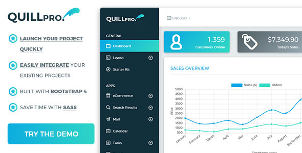

Thanks for purchasing QuillPro! This document contains everything you need to know about QuillPro. Keep reading...
React Documentation: Click here.
QuillPro was built with a simple structure so you can spend less time figuring out how to use the template and focus on building and launching your project.
Introduction To QuillPro
QuillPro was built using both Bootstrap 4, so if you understand how to use Bootstrap 4, you will have no trouble understanding QuillPro.
That's why this documentation will only cover aspects of QuillPro that have either added news features or updated the way Bootstrap 4 works.
Here's a quick link to Bootstap 4 to help you out.

Updating to QuillPro v1.4 (Boostrap 4.0.0 - Stable Release)
IMPORTANT If you are updating your code from QuillPro 1.3 and below, then this section is important!
Skip ahead if you are not upgrading from QuillPro 1.3 or below.
From QuillPro 1.4, we are using Bootstrap 4.0.0 instead of the beta release. With this version of Bootstrap, there are a bunch of code changes that have been made which may break your project if you do not update your code where necessary.
To make it easier for you, we have done the following:
- Created a list of all items changed/modified
- We left in the old Bootstrap code and only commented them out within the necessary files. You can find them within the files listed below by doing a search of "DEPRECATED CODE:"
FILES CHANGED IN QUILLPRO 1.4
- Forms -
Files/forms.html - Tables -
Files/tables.html - Navbar -
Files/ui-other-bootstrap-elements.html
Getting A Head Start
If you want to just jump in and start using QuillPro, then you can just open Files/starter-kit.html and get to work. All you need is knowledge of Bootstrap 4 in order to get started.
But, if you want to know what QuillPro can really do or you want to start from scratch, then keep reading. Both ways lead to an awesome final design.
NOTE If a layout or element or feature is not listen within this documentation, that means it's cosidered, basic HTML knowledge, already in the Bootstrap documentation or it is easier for you just to copy it direclt from the HTML file within the Files folder.
Required Files
QuillPro requires certain files in order to work as intended. You can look within each file in Files to see the requirements properly commented, but you can also just copy paste the code below.
Both CSS/SASS and Javascript files are commented with the necessary code for you to alter them as needed.
Click here to see the CSS files required by the frontend template.
CSS/SASS
Place these within the head of the file.
<head> <!-- Fonts --> <link href="https://fonts.googleapis.com/css?family=Montserrat:300,400,500,700&subset=latin-ext" rel="stylesheet"> <!-- CSS - REQUIRED - START --> <!-- Batch Icons --> <link rel="stylesheet" href="assets/fonts/batch-icons/css/batch-icons.css"> <!-- Bootstrap core CSS --> <link rel="stylesheet" href="assets/css/bootstrap/bootstrap.min.css"> <!-- Material Design Bootstrap --> <link rel="stylesheet" href="assets/css/bootstrap/mdb.min.css"> <!-- Custom Scrollbar --> <link rel="stylesheet" href="assets/plugins/custom-scrollbar/jquery.mCustomScrollbar.min.css"> <!-- Hamburger Menu --> <link rel="stylesheet" href="assets/css/hamburgers/hamburgers.css"> <!-- CSS - REQUIRED - END --> <!-- CSS - OPTIONAL - START --> <!-- Place optional styles here --> <!-- CSS - OPTIONAL - END --> <!-- QuillPro Styles --> <link rel="stylesheet" href="assets/css/quillpro/quillpro.css"> </head>
Frontend
-
Add the following CSS file just after the
<!-- CSS - OPTIONAL - START -->:
<link rel="stylesheet" href="assets/plugins/baguettebox/baguetteBox.min.css">
-
If you need a gallery, then you will need to add this.
Add the following CSS file just after the QuillPro Stylesheet:
<link rel="stylesheet" href="assets/css/quillpro/quillpro-frontend.css">
Javascript
Place these just before the end of the body tag.
Click here to see the Javascript files required by the frontend template.
<!-- SCRIPTS - REQUIRED START --> <!-- Placed at the end of the document so the pages load faster --> <!-- Bootstrap core JavaScript --> <!-- JQuery --> <script type="text/javascript" src="assets/js/jquery/jquery-3.1.1.min.js"></script> <!-- Popper.js - Bootstrap tooltips --> <script type="text/javascript" src="assets/js/bootstrap/popper.min.js"></script> <!-- Bootstrap core JavaScript --> <script type="text/javascript" src="assets/js/bootstrap/bootstrap.min.js"></script> <!-- MDB core JavaScript --> <script type="text/javascript" src="assets/js/bootstrap/mdb.min.js"></script> <!-- Velocity --> <script type="text/javascript" src="assets/plugins/velocity/velocity.min.js"></script> <script type="text/javascript" src="assets/plugins/velocity/velocity.ui.min.js"></script> <!-- Custom Scrollbar --> <script type="text/javascript" src="assets/plugins/custom-scrollbar/jquery.mCustomScrollbar.concat.min.js"></script> <!-- jQuery Visible --> <script type="text/javascript" src="assets/plugins/jquery_visible/jquery.visible.min.js"></script> <!-- jQuery Visible --> <!-- IE10 viewport hack for Surface/desktop Windows 8 bug --> <script type="text/javascript" src="assets/js/misc/ie10-viewport-bug-workaround.js"></script> <!-- SCRIPTS - REQUIRED END --> <!-- SCRIPTS - OPTIONAL START --> <!-- Input Addon Scripts & Plugins here --> <!-- SCRIPTS - OPTIONAL END --> <!-- QuillPro Script --> <script type="text/javascript" src="assets/js/scripts.js"></script> <!-- QuillPro Script --> </body> </html>
Frontend
-
If you need a gallery, then you will need to add this.
Add the following JS file just after the<!-- SCRIPTS - OPTIONAL START -->:
<script type="text/javascript" src="assets/plugins/baguettebox/baguetteBox.min.js"></script>
-
If you use videos, this plugin will allow your video resize to fit the with of it's parent container. Think "Responsive Videos".
Also add this JS file:
<script type="text/javascript" src="assets/plugins/fitvids/jquery.fitvids.min.js"></script>
Required Files - RTL
QuillPro supports RTL languages (Arabic, Hebrew, etc). All you have to do is to replace certain files. These files are listed below.
NOTE All HTML files come with an RTL duplicate. So index.html has index-rtl.html as its RTL counterpart, ui-cards.html has ui-cards-rtl.html... and so on.
NOTE These changes also apply to the SASS files too.
Link to the following files if you want to build an RTL page.
- CSS:
<link rel="stylesheet" href="assets/css/bootstrap/bootstrap.min.css">becomes<link rel="stylesheet" href="assets/css/bootstrap/bootstrap-rtl.min.css"> - CSS:
<link rel="stylesheet" href="assets/css/bootstrap/mdb.min.css">becomes<link rel="stylesheet" href="assets/css/bootstrap/mdb-rtl.min.css"> - CSS:
<link rel="stylesheet" href="assets/css/quillpro/quillpro.css">becomes<link rel="stylesheet" href="assets/css/quillpro-rtl/quillpro-rtl.css"> - Javascript:
<script type="text/javascript" src="assets/js/bootstrap/bootstrap.min.js"></script>becomes<script type="text/javascript" src="assets/js/bootstrap/bootstrap-rtl.min.js"></script>
Layouts
There are 4 main layout types. You can see them in action in the demos below.
Below are the general layouts of each layout type.
Left Menu - Normal
<!DOCTYPE html> <html> <head> <!-- Header Styles & Scripts --> </head> <body> <div class="container-fluid"> <div class="row"> <nav id="sidebar" class="px-0 bg-dark bg-gradient sidebar"> <button class="hamburger hamburger--slider" type="button" data-target=".sidebar" aria-controls="sidebar" aria-expanded="false" aria-label="Toggle Sidebar"><span class="hamburger-box"><span class="hamburger-inner"></span></span></button> <ul class="nav nav-pills flex-column"> <li class="logo-nav-item"> <a class="navbar-brand" href="#"> <img src="assets/img/logo-white.png" width="145" height="32.3" alt="QuillPro"> </a> </li> <li>General</li> <!-- Sub Heading Does Not Have A Class. --> <li class="nav-item">Menu Item 1</li> <li class="nav-item">Menu Item 2</li> </ul> </nav> <div class="right-column"> <nav class="navbar navbar-expand-lg navbar-light bg-white"> <a class="navbar-brand d-block d-sm-block d-md-block d-lg-none" href="#"> <img src="assets/img/logo-dark.png" width="145" height="32.3" alt="QuillPro"> </a> <button class="hamburger hamburger--slider" type="button" data-target=".sidebar" aria-controls="sidebar" aria-expanded="false" aria-label="Toggle Sidebar"> <span class="hamburger-box"> <span class="hamburger-inner"></span> </span> </button> <!-- -- Start -- Optional: Mobile-Only Menu (See Header Elements section for details) -- End -- --> <div class="collapse navbar-collapse" id="navbar-header-content"> <!-- Header Content --> </div> </nav> <main class="main-content p-4"> <!-- Main Content --> </main> </div> </div> </div> <!-- Footer Scripts --> </body> </html>
Left Menu - Hidden
<!DOCTYPE html> <html> <head> <!-- Header Styles & Scripts --> </head> <body> <div class="container-fluid"> <div class="row"> <nav id="sidebar" class="px-0 bg-dark bg-gradient sidebar sidebar-hidden"> <button class="hamburger hamburger--slider" type="button" data-target=".sidebar" aria-controls="sidebar" aria-expanded="false" aria-label="Toggle Sidebar"><span class="hamburger-box"><span class="hamburger-inner"></span></span></button> <ul class="nav nav-pills flex-column"> <li class="logo-nav-item"> <a class="navbar-brand" href="#"> <img src="assets/img/logo-white.png" width="145" height="32.3" alt="QuillPro"> </a> </li> <li>General</li> <!-- Sub Heading Does Not Have A Class. --> <li class="nav-item">Menu Item 1</li> <li class="nav-item">Menu Item 2</li> </ul> </nav> <div class="right-column"> <nav class="navbar navbar-expand-lg navbar-light bg-white"> <a class="navbar-brand" href="#"> <img src="assets/img/logo-dark.png" width="145" height="32.3" alt="QuillPro"> </a> <button class="hamburger hamburger--slider" type="button" data-target=".sidebar" aria-controls="sidebar" aria-expanded="false" aria-label="Toggle Sidebar"> <span class="hamburger-box"> <span class="hamburger-inner"></span> </span> </button> <!-- -- Start -- Optional: Mobile-Only Menu (See Header Elements section for details) -- End -- --> <div class="collapse navbar-collapse" id="navbar-header-content"> <!-- Header Content --> </div> </nav> <main class="main-content p-4"> <!-- Main Content --> </main> </div> </div> </div> <!-- Footer Scripts --> </body> </html>
Top Menu - Fixed
<!DOCTYPE html> <html> <head> <!-- Header Styles & Scripts --> </head> <body> <div class="container-fluid"> <div class="row"> <nav class="navbar-sidebar-horizontal navbar navbar-expand-lg navbar-light bg-white fixed-top"> <a class="navbar-brand" href="#"> <img src="assets/img/logo-dark.png" width="145" height="32.3" alt="QuillPro"> </a> <button class="hamburger hamburger--slider" type="button" data-target=".sidebar-horizontal" aria-controls="sidebar-horizontal" aria-expanded="false" aria-label="Toggle Main Menu"> <span class="hamburger-box"> <span class="hamburger-inner"></span> </span> </button> <!-- -- Start -- Optional: Mobile-Only Menu (See Header Elements section for details) -- End -- --> <div class="collapse navbar-collapse" id="navbar-header-content"> <!-- Header Content --> </div> </nav> <div class="right-column"> <nav class="sidebar-horizontal navbar navbar-expand-lg navbar-dark bg-dark fixed-top"> <div class="navbar-collapse" id="navbar-header-menu-outer"> <ul class="navbar-nav navbar-header-menu mr-auto" data-qp-animate-type="fadeInDown"> <li class="nav-item"> <a class="nav-link" href="index.html"> <i class="batch-icon batch-icon-browser-alt"></i> Dashboard </a> </li> <li class="nav-item dropdown"> <a class="nav-link dropdown-toggle" id="navbar-dropdown-dashboard-link" data-toggle="dropdown" data-flip="false" aria-haspopup="true" aria-expanded="false"> <i class="batch-icon batch-icon-layout-content-left"></i> Layout <span class="sr-only">(current)</span> </a> <ul class="dropdown-menu" aria-labelledby="navbar-dropdown-dashboard-link"> <li><a class="dropdown-item" href="layout-left-menu-hidden.html">Left Menu - Hidden</a></li> <li><a class="dropdown-item" href="layout-left-menu-normal.html">Left Menu - Normal</a></li> <li><a class="dropdown-item" href="layout-top-menu-fixed.html">Top Menu - Fixed</a></li> <li><a class="dropdown-item" href="layout-top-menu-normal.html">Top Menu - Normal</a></li> </ul> </li> </ul> </div> </nav> <main class="main-content p-4"> <!-- Main Content --> </main> </div> </div> </div> <!-- Footer Scripts --> </body> </html>
Top Menu - Normal
<!DOCTYPE html> <html> <head> <!-- Header Styles & Scripts --> </head> <body> <div class="container-fluid"> <div class="row"> <nav class="navbar-sidebar-horizontal navbar navbar-expand-lg navbar-light bg-white"> <a class="navbar-brand" href="#"> <img src="assets/img/logo-dark.png" width="145" height="32.3" alt="QuillPro"> </a> <button class="hamburger hamburger--slider" type="button" data-target=".sidebar-horizontal" aria-controls="sidebar-horizontal" aria-expanded="false" aria-label="Toggle Main Menu"> <span class="hamburger-box"> <span class="hamburger-inner"></span> </span> </button> <!-- -- Start -- Optional: Mobile-Only Menu (See Header Elements section for details) -- End -- --> <div class="collapse navbar-collapse" id="navbar-header-content"> <!-- Header Content --> </div> </nav> <div class="right-column"> <nav class="sidebar-horizontal navbar navbar-expand-lg navbar-dark bg-dark"> <div class="navbar-collapse" id="navbar-header-menu-outer"> <ul class="navbar-nav navbar-header-menu mr-auto" data-qp-animate-type="fadeInDown"> <li class="nav-item"> <a class="nav-link" href="index.html"> <i class="batch-icon batch-icon-browser-alt"></i> Dashboard </a> </li> <li class="nav-item dropdown"> <a class="nav-link dropdown-toggle" id="navbar-dropdown-dashboard-link" data-toggle="dropdown" data-flip="false" aria-haspopup="true" aria-expanded="false"> <i class="batch-icon batch-icon-layout-content-left"></i> Layout <span class="sr-only">(current)</span> </a> <ul class="dropdown-menu" aria-labelledby="navbar-dropdown-dashboard-link"> <li><a class="dropdown-item" href="layout-left-menu-hidden.html">Left Menu - Hidden</a></li> <li><a class="dropdown-item" href="layout-left-menu-normal.html">Left Menu - Normal</a></li> <li><a class="dropdown-item" href="layout-top-menu-fixed.html">Top Menu - Fixed</a></li> <li><a class="dropdown-item" href="layout-top-menu-normal.html">Top Menu - Normal</a></li> </ul> </li> </ul> </div> </nav> <main class="main-content p-4"> <!-- Main Content --> </main> </div> </div> </div> <!-- Footer Scripts --> </body> </html>
Header Elements
These reside in the area marked "Header Content" in the .navbar-header-content class in the layouts above.
Mobile-Only Menu
THe Mobile-Only Menu contains notification items that will only be present on mobile devices/small screens.
First add the following bit of code to the .navbar-header-content class.
NOTE If you have already added the code below to your header, you do not need to add it again.
<ul class="navbar-nav ml-auto mobile-only-control d-block d-sm-block d-md-block d-lg-none"> // Other code will go here </ul>
Then add the following code into the code above.
<li class="nav-item dropdown"> <a class="nav-link dropdown-toggle" id="navbar-notification-search-mobile" data-toggle="dropdown" data-flip="false" aria-haspopup="true" aria-expanded="false"> <i class="batch-icon batch-icon-search"></i> </a> <ul class="dropdown-menu dropdown-menu-fullscreen" aria-labelledby="navbar-notification-search-mobile"> <li> <form class="form-inline my-2 my-lg-0 no-waves-effect"> <div class="input-group"> <input type="text" class="form-control" placeholder="Search for..." aria-label="Search for..." aria-describedby="basic-addon2"> <div class="input-group-append"> <button class="btn btn-primary btn-gradient waves-effect waves-light" type="button"> <i class="batch-icon batch-icon-search"></i> </button> </div> </div> </form> </li> </ul> </li>
Language Selection
<ul class="navbar-nav navbar-language-translation mr-auto" data-qp-animate-type="fadeInDown"> <li class="nav-item dropdown"> <a class="nav-link dropdown-toggle" id="navbar-dropdown-menu-link" data-toggle="dropdown" data-flip="false" aria-haspopup="true" aria-expanded="false"> <i class="batch-icon batch-icon-book-alt-"></i> English </a> <ul class="dropdown-menu" aria-labelledby="navbar-dropdown-menu-link"> <li><a class="dropdown-item" href="#">Français</a></li> <li><a class="dropdown-item" href="#">Deutsche</a></li> <li><a class="dropdown-item" href="#">Español</a></li> </ul> </li> </ul>
Header Search Bar
First add the following bit of code to the .navbar-header-content class.
NOTE If you have already added the code below to your header, you do not need to add it again.
<ul class="navbar-nav navbar-notifications float-right" data-qp-animate-type="fadeInDown"> // Other code will go here </ul>
Then add the following code into the code above.
<li class="nav-item dropdown"> <a class="nav-link dropdown-toggle" id="navbar-notification-search" data-toggle="dropdown" data-flip="false" aria-haspopup="true" aria-expanded="false"> <i class="batch-icon batch-icon-search"></i> </a> <ul class="dropdown-menu dropdown-menu-fullscreen" aria-labelledby="navbar-notification-search"> <li> <form class="form-inline my-2 my-lg-0 no-waves-effect"> <div class="input-group"> <input type="text" class="form-control" placeholder="Search for..." aria-label="Search for..." aria-describedby="basic-addon2"> <div class="input-group-append"> <button class="btn btn-primary btn-gradient waves-effect waves-light" type="button">Search</button> </div> </div> </form> </li> </ul> </li>
General Notifications
First add the following bit of code to the .navbar-header-content class.
NOTE If you have already added the code below to your header, you do not need to add it again.
<ul class="navbar-nav navbar-notifications float-right" data-qp-animate-type="fadeInDown"> // Other code will go here </ul>
Then add the following code into the code above.
<li class="nav-item dropdown"> <a class="nav-link dropdown-toggle no-waves-effect" id="navbar-notification-misc" data-toggle="dropdown" data-flip="false" aria-haspopup="true" aria-expanded="false"> <i class="batch-icon batch-icon-bell"></i> <span class="notification-number">4</span> </a> <ul class="dropdown-menu dropdown-menu-right dropdown-menu-md" aria-labelledby="navbar-notification-misc"> <li class="media"> <a href="task-list.html" class=""> <i class="batch-icon batch-icon-bell batch-icon-xl d-flex mr-3"></i> <div class="media-body"> <h6 class="mt-0 mb-1 notification-heading">General Notification</h6> <div class="notification-text"> Cras sit amet nibh libero </div> <span class="notification-time">Just now</span> </div> </a> </li> // Other List Items </ul> </li>
Header Profile
Add the following bit of code to the .navbar-header-content class.
<ul class="navbar-nav ml-5 navbar-profile" data-qp-animate-type="fadeInDown"> <li class="nav-item dropdown"> <a class="nav-link dropdown-toggle" id="navbar-dropdown-navbar-profile" data-toggle="dropdown" data-flip="false" aria-haspopup="true" aria-expanded="false"> <div class="profile-name"> Johanna Quinn </div> <div class="profile-picture bg-gradient bg-primary has-message float-right"> <img src="assets/img/profile-pic.jpg" width="44" height="44"> </div> </a> <ul class="dropdown-menu dropdown-menu-right" aria-labelledby="navbar-dropdown-navbar-profile"> <li><a class="dropdown-item" href="profiles-member-profile.html">Profile</a></li> <li> <a class="dropdown-item" href="mail-inbox.html"> Messages <span class="badge badge-danger badge-pill float-right">3</span> </a> </li> // Other List Items </ul> </li> </ul>
UI - Cards
See demos for Cards and Special Cards for more.
Since Bootstrap 4's content resides primarily within Cards, that's the first place we will start.
Mini Cards
Mini Cards are used to display quick yet important information to the user and have a fixed height. This information is usually to small to be place anywhere else, to a Mini Card is used.
Just add the class .card-xs to the .card class and you will get a mini card.
<div class="card card-xs"> <div class="card-body"> Your cotent here </div> </div>
Mini Cards are best used when you give them a background color using the normal Bootstrap 4 background classes: .bg-primary, .bg-success, etc. Just add them to the .card class like below.
<div class="card card-xs bg-primary bg-gradient"> <div class="card-body"> Your cotent here </div> </div>
Mini Card - Tiles
You can use Mini Cards to create Tiles. See below
<div class="card card-xs bg-primary bg-gradient"> <div class="card-body px-4 py-3"> <div class="tile-left"> <i class="batch-icon batch-icon-user-alt batch-icon-xxl"></i> </div> <div class="tile-right"> <div class="tile-number">1,359</div> <div class="tile-description">Customers Online</div> </div> </div> </div>
Small Cards
Small Cards are created just like Mini Cards, above, but they only differ in their height and function. Small Cards are slightly larger the Mini Cards and can hold more information, including charts. See Chart for more.
Just add the class .card-sm to the .card class and you will get a Small Card. You can also add background colors to them just like mini cards. See Mini Cards for more.
<div class="card card-sm"> <div class="card-body"> Your cotent here </div> </div>
Medium Cards
Medium Cards are used to display any type of content that you wish. They are best used when you want to control the height of your content.
They are larger than Small Cards and are created just like Mini & Small Cards. If you want to create a Special Card (see demo), then it's best to use a Medium Card as it will give it the best layout and size.
Just add the class .card-md to the .card class and you will get a Medium Card. You can also add background colors to them just like mini cards but only use backgrounds when creating Special Cards. See Mini Cards for more.
<div class="card card-md"> <div class="card-body"> Your cotent here </div> </div>
Medium Card - Custom Data Card
You can use Medium Cards to create Custom Data Cards. For Example, to track your goals to an event.
<div class="card card-md bg-danger text-center"> <div class="card-body"> <h6 class="my-5">Goal Reached</h6> <i class="batch-icon batch-icon-bullhorn batch-icon-xxl"></i> <div class="display-4 mt-3">4,294</div> <p>of 4,000 Target Downloads</p> <p>Congratulations! You surpassed your target goal.</p> <a class="btn btn-warning">See Details</a> </div> </div>
Large Cards
Large Cards are the largest height preset for cards and are used to display any type of content that you wish. They are best used when you want to control the height of your content.
They are created just like Medium Cards. Do not use background colors with Large Cards, instead stick to Medium , Small and Mini Cards.
Just add the class .card-lg to the .card class and you will get a Large Card.
<div class="card card-lg"> <div class="card-body"> Your cotent here </div> </div>
App Cards
App Cards are created specifically to display information for an app. They also have some of the functionality for the app.
For exmaples, you need to check the Special Cards page and look at the code in Files/ui-cards-special.html
Additional Card Info
Card Header Button
You can add buttons to the header of your card by using the following code. Just create a div element with class .header-btn-block. Within this div element, you can create your buttons.
<div class="card"> <div class="card-header"> Card Header <div class="header-btn-block"> <a href="task-manager.html" class="btn btn-primary"> <i class="batch-icon batch-icon-add"></i> </a> </div> </div> </div>
Charts
ChartJS
Using charts in QuillPro is extremely easy. All you have to do is follow the structure below, then call the relevant Javascript function and you are set.
First, follow the structure below. You chart can reside in the .card-body like any other content as long as you encapsulate it within .card-chart
<div class="card"> <div class="card-body"> <div class="card-chart" data-chart-color-1="#07a7e3" data-chart-color-2="#32dac3" data-chart-legend-1="Sales ($)" data-chart-legend-2="Orders" data-chart-height="281"> <canvas id="chart-id"></canvas> </div> </div> </div>
After you have the code above, follow the steps below.
-
Open
../Files/assets/js/script.js - Scroll down to the section that says
REQUIRED FUNCTIONS - START. - Then call the chart function. In this example, we will call the Line Chart function. (It's the same way to call other charts. Just use their appropirate name)
- NOTE Line Charts and Bar Charts must be called twice. One in the area mentioned above and also in the "window resize" section.
$(document).ready(function() {
/**
* REQUIRED FUNCTIONS - START
*/
// Line Chart
qp_line_chart('#chart-id');
// Bar Chart
// This accepts 2 more optional arguments
// chartType: bar, horizontalBar (default is bar)
// isStacked: true, false (default is false)
qp_bar_chart('#chart-id');
// Doughnut, Pie or Radar Chart
// This accepts a second argument: chartType
// chartType: pie, doughnut, polarArea (for radar)
qp_doughnut_pie_chart('#chart-id');
$(window).resize(function () {
waitForFinalEvent(function(){
// functions here...
}, 500, 'thisstringisunsdsaique');
});
/* REQUIRED FUNCTIONS - END */
});
As you can see from the code above, you will need to tell QuillPro what the colors and chart labels you want to use. This must be set in the .card-chart NOT canvas. The canvas only accepts the ID of the chart you want to create.
data-chart-color-1: This is the color of the first dataset you want to chart.data-chart-color-2: This is the color of the second dataset you want to chart.data-chart-legend-1: This is the legend of the first dataset you want to chart.data-chart-legend-2: This is the legend of the second dataset you want to chart.- Optional
data-chart-height: This is the height you want your chart to be. - NOTE There is no
data-chart-width - NOTE You can have up to 2 datasets for the Line, Bar and Horizontal Charts. The Pie, Doughnut and Radar Charts has up to 5 datasets by default. If you would like more datasets, you will need to edit the Javascript code. Don't worry, it's quite easy.
- NOTE Within the
../Files/assets/js/script.jsfile, you must edit the section that says/* DEMO DATA - START */. You will have to add your own data here.
Card-SM Charts
DO NOT set the data-chart-height of the chart when you are using the .card-sm class.
Easy Pie Charts
It's easier to just copy the code directly from the ../Files/ui-chart.html file, then follow the documentation of the Easy Pie Charts explains how it works better than this documentation can. https://github.com/rendro/easy-pie-chart
Buttons
Gradient Buttons
Gradient Buttons add an extra level of style to your page. This can be achieved by just adding .btn-gradient to your .btn class. It works on all buttons sizes.
<a class="btn btn-primary btn-gradient">Primary Button</a> <button class="btn btn-primary btn-gradient">Primary Button</button>
Outline Buttons
To make a button an outline button, just replace the default Bootstrap button style like so: .btn-primary becomes .btn-outline-primary, .btn-success becomes .btn-outline-success
Outline Buttons are best used when they are the secondary button and are not the action you'd like for the user to take. For example, you may have an "Accept" button which is .btn-primary and "Decline" which is an outline button.
IMPORTANT Outline Buttons do not work with gradient background.
Icons
QuillPro uses Batch Icons and it's extremely easy to use.
Just create an element like so: <i class="batch-icon batch-icon-*"></i>, where batch-icon-* is taken from the list on the Icon List page.
Icon Sizes
You can use the size presets to change the size of the icons. Just add any of the following classes to your .batch-icon element.
.batch-icon-sm , .batch-icon-md , .batch-icon-lg , .batch-icon-xl or .batch-icon-xxl
<i class="batch-icon batch-icon-user"></i> <!-- Normal --> <i class="batch-icon batch-icon-user batch-icon-sm"></i> <i class="batch-icon batch-icon-user batch-icon-md"></i> <i class="batch-icon batch-icon-user batch-icon-lg"></i> <i class="batch-icon batch-icon-user batch-icon-xl"></i> <i class="batch-icon batch-icon-user batch-icon-xxl"></i>
Gallery
QuillPro's Gallery s extremely easy to you. It uses Bootstrap 4's card layouts to handle the gallery layout for both Image-only Galleries and Image Galleries with Captions.
NOTE The gallery is dependant on baguetteBox. You must link to the plugin's JS and CSS files for it to work properly. See ../Files/gallery.html for more.
Add a class name to the parent div that contains all image elements that you want to be part for your gallery. In the sample code below, we use .qp-gallery-one. You can name you're whatever you want.
<i class="batch-icon batch-icon-user"></i> <!-- Normal --> <div class="row mb-5 pb-5 clearfix qp-gallery-one"> <!-- Gallery image elements will be placed here --> </div>
Next, you want to follow the structure of the gallery. While you can create any layout you want, below is the most basic layout.
Use .lightbox on each .card in the gallery. Also make sure the thumbnail links to the image that you want to display when the thumbnail is clicked.
<div class="col-sm-6 col-md-4 mb-5"> <div class="card lightbox"> <a href="assets/img/gallery-image-1.jpg"> <img class="card-img" src="assets/img/gallery-image-1.jpg" alt="Gallery Image 1"> </a> </div> </div>
-
Finally, open
../Files/assets/js/script.js - Scroll down to the section that says
REQUIRED FUNCTIONS - START. -
Look for the function
qp_gallery -
Now add the class name of the gallery. Remember we used,
.qp-gallery-one. - That's it!
- NOTE Line Charts and Bar Charts must be called twice. One in the area mentioned above and also in the "window resize" section.
Filterizr - Filter & Sort
The Filterizr plugin gives you the ability to filter and sort cards based on whatever criteria you wish.
We won't go into all the settings here since the Filterizr documentation covers all that, but what we will cover are the changes that we've made to the layout for it to merge with QuillPro's style.
NOTE You can check ../Files/ui-filterizr.html for a detailed sample.
Miscellaneous Items
Profile Image
The profile image can be used anywhere you wish wihtout having to change any CSS code. Just use the code below. You can also increase the size of the Profile image by adding the .profile-picture-lg class to the .profile-picture class
<div class="profile-picture bg-gradient bg-primary"> <img src="assets/img/profile-pic.jpg"> </div>
<div class="profile-picture profile-picture-lg bg-gradient bg-primary"> <img src="assets/img/profile-pic.jpg"> </div>
You can also add the .has-message class to the .profile-picture class to signify that there is a message from the user. Or if used for the logged in profile for your app, it will denote the logged in profile has a message. It can also be used with the .profile-picture-lg class.
<div class="profile-picture has-message bg-gradient bg-primary"> <img src="assets/img/profile-pic.jpg"> </div>
Gradient Background
Gradient Backgrounds are easy to achieve. Just add the .bg-gradient to any bootstrap background class and it will become a gradient. See code below:
<div class="card card-md bg-primary bg-gradient"> // Card content </div>
Wave Effect On Click
By default, most buttons and clickable elements come with a wave effect when clicked. This effect allows the user know that their interaction with the element was successful.
You don't really have to make any changes or additions in order to see the effect, but sometimes you might want to have a wave effect on a custom element or you may want a light wave instead of a dark one or vice versa. You can do that by using the following classes on that particular element.
-
Light Wave Effect:
.waves-effect.waves-light -
Dark Wave Effect:
.waves-effect.waves-dark
You may find yourself in a situation when a wave effect is used on an element that you prefer to be waveless or the wave effect affects the way your design works (because the wave class adds a overflow: hidden to wave elements). In these cases you can just use .no-waves-effect on the element and the wave effect will not be used on that element.
<button type="button" class="btn btn-primary waves-effect waves-light">Primary</button> <!-- Light Wave Effect (Default) --> <button type="button" class="btn btn-primary waves-effect waves-dark">Primary</button> <!-- Dark Wave Effect --> <button type="button" class="btn btn-primary no-waves-effect">Primary</button> <!-- No Wave Effect -->
Ecommerce - Color Selection
The color selection on the Ecommerce Product Page uses a modified version of Bootstrap's custom checkbox. To modify it to get the color options, just add .custom-color-control to the .custom-control element and add data-qp-color="#fce418" (change #fce418 to your color of choice). The rest is automated. Check out the code below.
<label class="custom-control custom-radio custom-color-control" data-qp-color="#fce418"> <input id="radio1" name="radio" type="radio" class="custom-control-input" value="yellow" checked> <span class="custom-control-indicator"></span> <span class="sr-only">Yellow</span> </label>
Utilities
These classes allow you to add or remove effects in your project. Go through each one to see their effects and how to use them.
-
.no-shadow: This allows you to remove the shadow effect from an element. It also prevents shadow on hover. -
.boldness-light: Makes the text the least bold value possible. -
.boldness-medium: Makes the text a little bolder than normal text -
.boldness-heavy: Makes the text the boldest it can be
.scrollto: (Frontend Template Only) Makes your links smooth scroll to an anchor on the page. Usage: <a href="#top">Top</a>, smooth scrolls to #top
Animation
Animation adds another level of awesomeness to QuillPro. The animation uses Animate.css and is extremely easy to use. Here's how to use it.
There are 3 ways to use the animation:
- To animate an element
- To animate an element's direct children elements
- To animate an element's direct children elements when there is a custom scrollbar on that particular element.
- NOTE Visit https://daneden.github.io/animate.css/ for all animation types
Animate An Element
- Add
.invisibleto the class of the element. - Add the attribute
data-qp-animate-type="fadeInDown"to the element. - Optional You can also add a delay on the element. This will delay the element by as long as you wish. Add the attribute
data-qp-animate-delay="300"to the element. The number used should be in milliseconds. The default delay is zero, so the item will be reveal once you scroll into view. - NOTE It is adviced that you use animate classes on items within
.cardlike.card-bodyand other sub-classes. This give a better and sleeker animation.
<div class="card"> <div class="card-body invisible" data-qp-animate-type="fadeInDown" data-qp-animate-delay="300"> Card Content </div> </div>
Animate An Element's Direct Children Elements
- Add
.invisible-childrento the class of the element. - Add the attribute
data-qp-animate-type="fadeInDown"to the element. - Optional You can also add a delay on the element. This will delay the element by as long as you wish. Add the attribute
data-qp-animate-delay="300"to the element. The number used should be in milliseconds. The default delay is zero, so the item will be reveal once you scroll into view. - NOTE It is adviced that you use animate classes on items within
.cardlike.card-bodyand other sub-classes. This give a better and sleeker animation.
<div class="card"> <div class="card-body"> <ul class="invisible-children" data-qp-animate-type="fadeInDown" data-qp-animate-delay="300"> <li>Item 1</li> <li>Item 2</li> <li>Item 3</li> </ul> </div> </div>
Animate An Element's Direct Children Elements (when there is a custom scrollbar on that particular element)
If you call the qp_add_scrollbar() function (See Javascript Functions) on an element, and you also want to animate the children of that element, then use this section.
- Add
.invisible-children-with-scrollbarto the class of the element. - Add the attribute
data-qp-animate-type="fadeInDown"to the element. - Optional You can also add a delay on the element. This will delay the element by as long as you wish. Add the attribute
data-qp-animate-delay="300"to the element. The number used should be in milliseconds. The default delay is zero, so the item will be reveal once you scroll into view. - NOTE It is adviced that you use animate classes on items within
.cardlike.card-bodyand other sub-classes. This give a better and sleeker animation.
The sample code is just like Animating Direct Children
Support
All support requests will be responded by our Customer Service Department.
Please state the name of the theme (QuillPro HTML) in the subject of your email.
Support Center: https://base5builder.com/support
Email support@base5builder.com
Behance: behance.net/TheInterlop3r
Dependencies
- Animate.css - https://daneden.github.io/animate.css/
- baguetteBox.js - https://feimosi.github.io/baguetteBox.js/
- Bootstrap Wizard
- ChartJS - http://www.chartjs.org/
- CKEditor - ckeditor.com
- Custom Scrollbar - http://manos.malihu.gr/jquery-custom-content-scroller/
- Datatables - https://datatables.net/
- Easy Pie Chart - https://github.com/rendro/easy-pie-chart
- Filterizr - http://yiotis.net/filterizr/
- FitVids.js - http://fitvidsjs.com/
- Full Calendar - https://fullcalendar.io/
- Jquery Visible - https://github.com/customd/jquery-visible/
- Jquery Mask - https://igorescobar.github.io/jQuery-Mask-Plugin/
- JQVMaps - https://jqvmap.com/
- Prettify - https://github.com/google/code-prettify
- TagsInput - https://github.com/xoxco/jQuery-Tags-Input
- Timelify - https://github.com/Liinkiing/jquery-timelify
- Toastr - https://github.com/CodeSeven/toastr
- Typeahead - https://twitter.github.io/typeahead.js/
- Velocity - velocityjs.org/